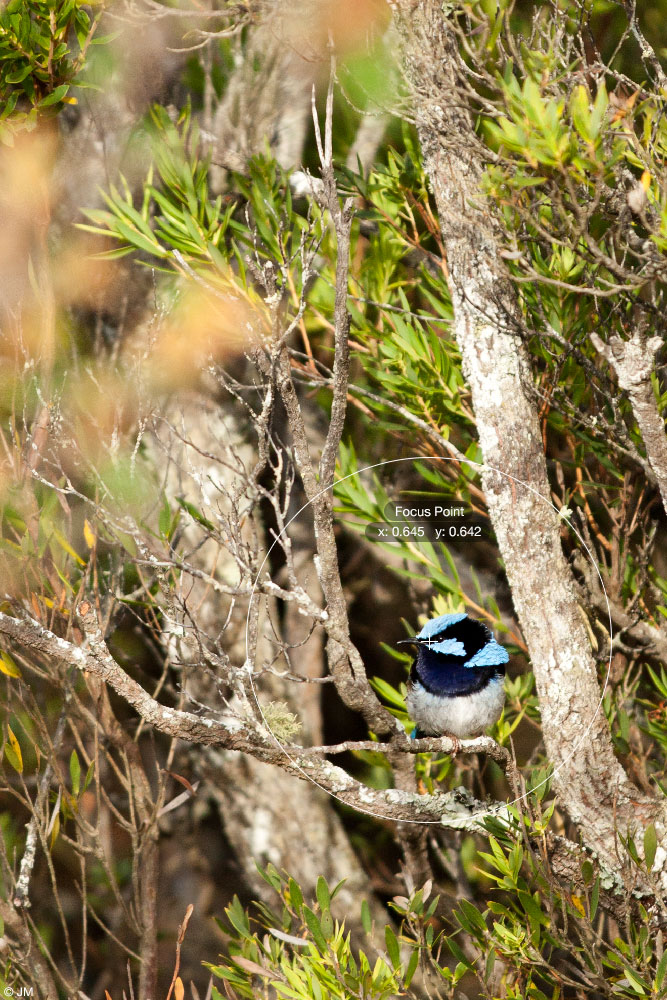

FocusPoint Tests
» Project Home

Default behaviour
Missing image-w and image-h
Slow redraw (high throttleDuration)
No throttling
Scale:
1x
1.5x
3x
5x
Don't adjust on window resize
» Adjust Focus
» Adjust Focus (old method)
» Window On
» Window Off